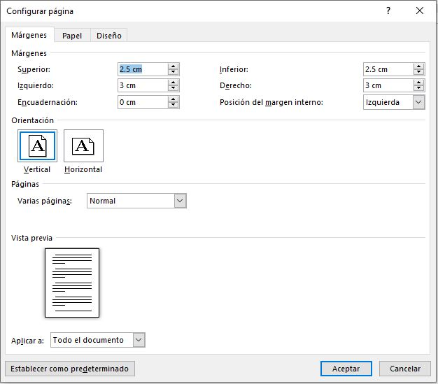
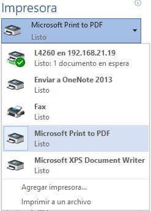

Word
Margenes
En Word, todas las páginas tienen automáticamente un margen de una pulgada. Se puede personalizar la configuración
de márgenes o elegir una predefinida. También se pueden establecer márgenes de páginas opuestas, dejar espacio de
márgenes adicional para la encuadernación de documentos y cambiar el modo en que se miden los márgenes.
Elegir margenes de página con una configuración predefinida
- En el grupo Configurar página de la pestaña Diseño de página, elija Márgenes
y aparecerá la galería Márgenes.
- Elija el tipo de margen que quiera aplicar.
- Establezca la nueva configuración de márgenes como predeterminada para la plantilla. Cada nuevo
documento que se base en esa plantilla usará automáticamente la nueva configuración de márgenes.
- Después de seleccionar un nuevo margen, elija Márgenes y luego Márgenes personalizados.
- En el cuadro de diálogo Configurar página, elija Establecer como predeterminado.
Observación:
Si el documento contiene varias secciones, el nuevo tipo de margen solo se aplicará a la sección
actual. Para aplicar el nuevo tipo de margen a varias secciones, asegúrese de seleccionarlas todas.
Crear una configuración de margenes de paginas personalizadas
- En el grupo Configurar página de la pestaña Diseño de página, elija Márgenes y aparecerá la galería Márgenes.
- En la parte inferior de la galería Márgenes, elija Márgenes personalizados.
- En el cuadro de diálogo Configurar página, especifique nuevos valores para los márgenes.
Otras sugerencias sobre márgenes
- Para cambiar los márgenes de una sección de un documento, seleccione el texto y establezca los nuevos
márgenes en el cuadro de diálogo Configurar página. En el cuadro Aplicar a, haga clic en Texto seleccionado.
Microsoft Word inserta automáticamente saltos de sección antes y después del texto con la nueva configuración
de márgenes.
- La mayoría de las impresoras requieren un ancho mínimo para la configuración de márgenes. Si los márgenes son
demasiado estrechos, Microsoft Word muestra el mensaje Uno o más márgenes están establecidos fuera del área
imprimible de la página. Haga clic en Arreglar para aumentar el ancho de los márgenes automáticamente.
Si omite el mensaje, Word muestra otro mensaje que le pregunta si quiere continuar.
- La configuración del margen mínimo de impresión depende de la impresora, el controlador de la impresora y
el tamaño del papel. Para obtener información sobre la configuración de márgenes mínimos, consulte el manual
de la impresora.
Establecer margenes de páginas opuestas
Utilice márgenes simétricos para configurar páginas opuestas en documentos de doble cara, como libros o revistas.
Cuando se eligen márgenes simétricos, los márgenes de la página izquierda son una imagen reflejada de los de la
página derecha. Los márgenes interiores tienen el mismo ancho y los márgenes exteriores tienen el mismo ancho.
- En el grupo Configurar página de la pestaña Diseño de página, haga clic en Márgenes > Reflejado.
Observación:
Nota: Para cambiar el ancho de márgenes, haga clic en Márgenes personalizados en la parte
inferior de la galería Márgenes. Escriba nuevos valores en los cuadros Interior y Exterior.
Agregar un margen de encuadenación para documentos enlazados
Un margen de encuadernación agrega espacio adicional al margen lateral, al margen superior o a los márgenes
internos del documento que tiene pensado encuadernar. De esa manera, el texto no quedará oculto con la
encuadernación.
- Márgenes de medianil para encuadernación
- Márgenes simétricos en páginas opuestas
Para establecer el margen de medianil
- En la pestaña Diseño de página, en el grupo Configurar página, haga clic en Márgenes.
- Haga clic en Márgenes personalizados.
- En el cuadro Medianil, escriba un valor para el ancho del margen de medianil.
- En el cuadro Posición de medianil, haga clic en Izquierda o en Superior.
Nota:
El cuadro Posición de medianil no está disponible cuando se utiliza la opción Márgenes simétricos,
Dos páginas por hoja o Formato libro. Para esas opciones, la posición del margen interno se determina automáticamente
Agregar un margen de encuadenación para documentos enlazados
Word puede mostrar líneas en el documento que representen los límites del texto.
- En la pestaña Archivo, haga clic en Opciones.
- Haga clic en Avanzadas y, en Mostrar contenido de documento, active la casilla Mostrar límites de texto.
Los márgenes de página aparecen en el documento como líneas de puntos.
Nota:
Puede ver los márgenes de página en la vista de diseño
de impresión o la vista de diseño web. Los límites de texto no aparecen en la página impresa.
Impresión
Antes de imprimir es interesante echar un vistazo al aspecto general del documento para ver si está todo correcto.
Para ello nos aseguraremos de que estamos viendo el documento en vista de impresión. En la pestaña Vista deberá
estar seleccionado Diseño de impresión, o bien deberemos comprobar que en la barra de estado esté marcada esta
opción Barra de estado  .
Esta vista presenta la página tal y como se imprimirá, con gráficos, imágenes,
encabezados y pies de página, etc.
.
Esta vista presenta la página tal y como se imprimirá, con gráficos, imágenes,
encabezados y pies de página, etc.
En la pestaña Vista > grupo Zoom. Se tienen opciones muy interesantes:
 .
.
-
El botón Una página ajustará la página al espacio que tenga en la pantalla, para que quepa completamente.
Lo mismo sucede con Dos páginas, pero con dos de ellas, una junto a la otra.
Si contamos ocon más páginas ¿Y si queremos ver mas alla de 10, 100 o más páginas que tiene el documento?
Para hacerlo, deberemos pulsar el botón Zoom  .
.
Se abrirá una ventana con la opción: Varias páginas.
Haciendo clic en el botón con forma de monitor, se desplegará un submenú donde podremos seleccionar cuántas
páginas queremos ver y cómo deberán estar organizadas.
Ejemplo:
Desde esta vista podremos apreciar y corregir mejor los detalles. Por ejemplo, si una página contiene
sólo una o dos líneas de texto, lo ideal sería intentar ajustar el texto de forma que quepa en la anterior,
y así ahorrar un papel. También veremos de forma más rápida y cómoda si los gráficos o imágenes del documento
están bien centrados, etc.
Opción ancho de página
La opción Ancho de página ajusta la página al ancho de la ventana de Word.
Opción 100 %
La opción 100% muestra el tamaño original de la página, sea cual sea el tamaño de la ventana de Word.
Imprimir
Para imprimir un documento podemos pulsar las teclas CTRL+P o bien ir a la pestaña Archivo y seleccionar Imprimir.
En la pantalla verás las opciones de impresión, tal y como se muestra en la siguiente imagen.
A la derecha podrás ver una vista previa del documento tal y como se imprimirá. Si te gusta el resultado será
suficiente con pulsar el botón Imprimir. Así también, disponemos de una serie de opciones de configuración que nos ayudarán
a lograr el resultado deseado.
Ventana de impresión
en la zona de la derecha vemos la vista previa de la página. En caso de tener más de una página,
podremos cambiar la página a visualizar:
En la zona izquierda de la ventana dispondremos de una serie de opciones de configuración de la impresión,
que nos permitirán:
-
Elegir cuántas copias imprimir del documento.
-
Escoger qué impresora queremos utilizar en la impresión del documento, en caso de que no queramos utilizar
la predeterminada que viene seleccionada por defecto. También podremos modificar las Propiedades de impresora
seleccionada, para por ejemplo imprimir en blanco y negro.
-
Opciones de Configuración como:
- Qué hojas imprimir: Las hojas activas, todo el libro, o bien la selección realizada.
- La intercalación. Cuando imprimimos varias copias sin intercalación se imprime X veces cada página,
por ejemplo: 1,1,1 2,2,2 3,3,3 4,4,4 sería la impresión de tres copias de un documento que ocupa
cuatro páginas. En cambio, si utilizamos el intercalado, se imprime el trabajo completo, una vez tras otra.
El mismo ejemplo sería: 1,2,3,4 1,2,3,4 1,2,3,4
-
La orientación y el tamaño del papel.
-
Modificar los márgenes.
-
Escoger cuántas páginas se incluirán en cada hoja impresa.
-
Acceder a la Configuración de página.
Podemos tambien acceder a todas estas opciones en haciendo clic en la esquina inferior izquierda
del grupo Configurar página en la pestaña Diseño de página
Se abrirá la siguiente ventana:

Las opciones están clasificadas en las pestañas Márgenes, Papel y Diseño
-
La opción Aplicar a. Esta opción nos permite mezclar configuraciones en la impresión de un único documento.
Ejemplo
Imagina que quieres imprimir el vertical las primeras 5 páginas y en horizontal el resto. Así también, podríamos modificar
los márgenes o cualquier otra opción configurable en el cuadro de diálogo.
-
Si normalmente imprimimos siempre con los mismos parámetros (márgenes, orientación, tipo de papel, etc.),
lo ideal es pulsar el botón Establecer como predeterminado tras haber configurado la impresión. De esta forma se imprimirá
siempre así por defecto.
Otras opciones de impresión
La configuración de Word también afecta a la impresión, aunque a veces no seamos conscientes de ello. existen algunos
elementos que por defecto no se imprimen, como los colores e imágenes de fondo. Normalmente está configurado así para
ahorrar tinta en las copias impresas, pero podemos cambiarlo.
En Archivo > Opciones abrimos la ventana de Opciones de Word. Deberemos situarnos en la opción Mostrar del menú que se
encuentra en el lateral izquierdo y ahí es donde encontraremos una serie de Opciones de impresión que podremos activar
o desactivar según nuestras necesidades.
Impresora virtual
En la ventana de impresión, podemos seleccionar la impresora de entre las que tenemos instaladas. Frecuentemente se cuenta
con una impresora virtual. Existen impresoras virtuales que imprimen en PDF.

La impresora virtual es una impresora que realmente no existe físicamente. Es una especie de "engaño" al sistema.
Se trata de un programa que se hace pasar por impresora, pero en vez de enviar la información que se imprime a la
bandeja de impresión, lo que hace es imprimirlo como un archivo. Es decir, que aparecerá un cuadro de diálogo
preguntándonos dónde guardar el archivo. Siempre disponemos de la impresora virtual que incluye Windows, llamada
Microsoft XPS Document Writer, que imprime un archivo de formato .xps.
Observación:
También podemos guardar un documento Word en formato PDF desde
Guardar como ... eligiendo
el tipo PDF, lo que equivale a imprimirlo en una impresora virtual.
Combinaciones de correspondencia
La combinación de correspondencia le permite crear un lote de documentos personalizados para cada destinatario.
Por ejemplo, una carta puede personalizarse para dirigirse a cada destinatario por su nombre. Los orígenes de datos,
como las listas, hojas de cálculo o bases de datos, están asociados al documento. Los marcadores de posición
(denominados campos de combinación) indican a Word en qué parte del documento incluir información del origen de datos.
El primer paso para configurar la combinación de correspondencia consiste en seleccionar el origen de datos que usará para
la información personalizada. Las hojas de cálculo de Excel y las listas de contactos de Outlook son los orígenes de datos
más comunes, pero se puede usar cualquier base de datos que se pueda conectar a Word. Si aún no tiene un origen de datos,
puede incluso escribirlo en Word como parte del proceso de combinación de correspondencia.
La combinación de correspondencia es una de las herramientas más utilizadas en Word. Este proceso es muy utilizado
en muchos sectores, tanto para que una secretaria cree invitaciones para un evento, un administrativo envíe cartas a sus
clientes en sus cumpleaños, o que un banco envíe diferentes recordatorios a los deudores con cuentas pendientes o los
famosos estados de cuentas de las diferentes tarjetas de créditos que recibimos mes a mes. De ahí que esta herramienta puede
resumir todo el trabajo de una jornada completa en pocos minutos.
Word ofrece herramientas para incorporar los datos en los siguientes tipos de documentos
Cartas
La combinación de correspondencia le permite crear un lote de cartas personalizadas en las que cada letra es idéntica
en diseño, formato, texto y gráficos, excepto para partes personalizadas como el saludo.
Primero que nada, tenemos que preparar la carta:
- Correspondencia > Iniciar combinación de correspondencia > cartas
- Escriba el cuerpo de la carta que desea enviar a la lista de distribución de correo.
Correo electrónico
Sobres o etiquetas
Directorio
Tablas de contenido, indices y tablas de ilustraciones
Marcadores, referencias cruzadas y notas al pie
Referencias cruzadas
Por posiciones
A ilustraciones
Arriba y abajo
Citas bibliográficas
Control de cambios
Al trabajar en un documento con otras personas o al editar un documento usted mismo,
active Control de cambios para ver todos los cambios. Word marca todas las adiciones, las eliminaciones,
los movimientos y los cambios de formato.
- Abra el documento que desea revisar.
- Haga clic en Revisar y, en el botón Control de cambios, seleccione Control de cambios.
- Al hacer clic en el botón Control de cambios, se resaltan las opciones disponibles.